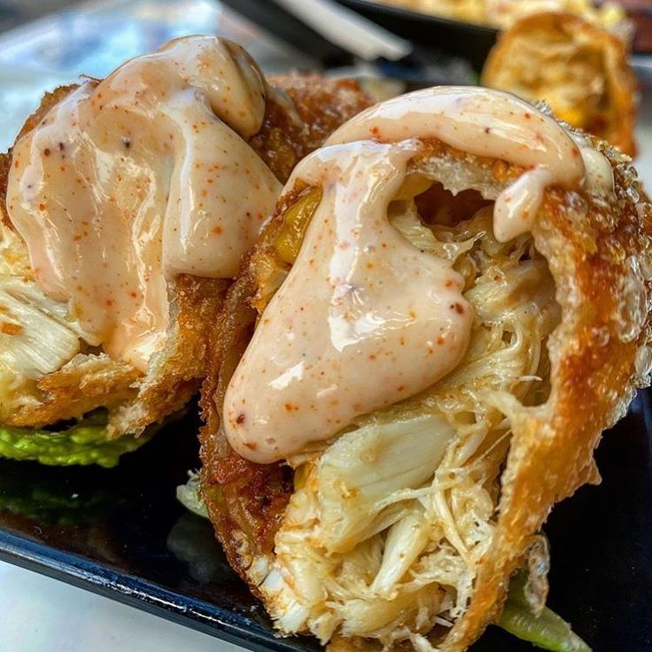
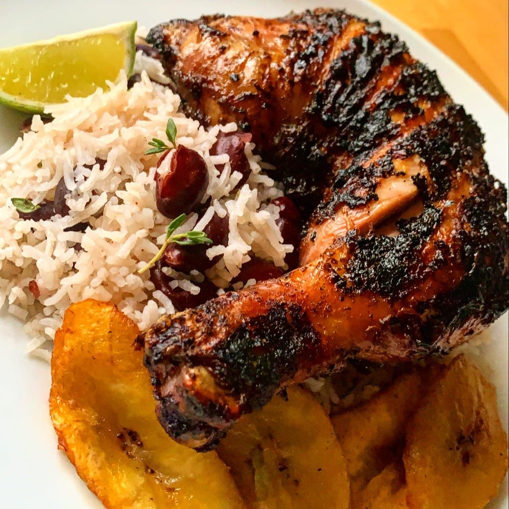
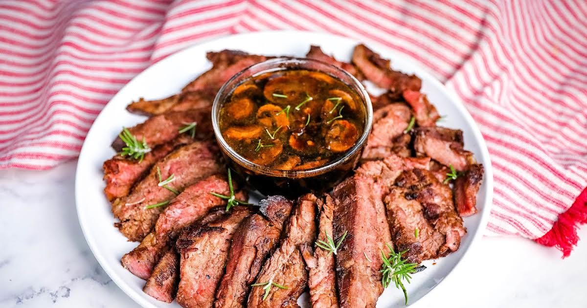

Black Goose Bistro • Full Menu
Baker's Corner, Seekonk, Massachusetts
Hours: Monday through Thursday: 11 to 9, Friday and Saturday; 11 to midnight
Appetizers
This season, we explore the spicy flavors of the southwest in our appetizer collection.
- ★ Black bean purses
- Spicy black bean and a blend of mexican cheeses wrapped in sheets of phyllo and baked until golden. $3.95

- ★ Southwestern napoleons with lump crab — new item!
- Layers of light lump crab meat, bean and corn salsa, and our handmade flour tortillas. $7.95

Main courses
Big, bold flavors are the name of the game this summer. Allow us to assist you with finding the perfect wine.
- ★ Jerk rotisserie chicken with fried plantains — new item!
- Tender chicken slow-roasted on the rotisserie, flavored with spicy and fragrant jerk sauce and served with fried plantains and fresh mango. Very spicy. $12.95

- ☆ Shrimp sate kebabs with peanut sauce
- Skewers of shrimp marinated in lemongrass, garlic, and fish sauce then grilled to perfection. Served with spicy peanut sauce and jasmine rice. $12.95

- ☆ Grilled skirt steak with mushroom fricasee
- Flavorful skirt steak marinated in Asian flavors grilled as you like it*. Served over a blend of sauteed wild mushrooms with a side of blue cheese mashed potatoes. $16.95

Toasted Items
The ultimate comfort food (to Western Standards), our traditional toast recipes are adapted from The Whitehouse Cookbook published in 1887.
- ☆ Cream Toast
- Simple cream sauce over the highest quality toasted bread, baked daily. $3.95
☆ Mushroom Toast
Layers of light lump crab meat, bean, and corn salsa, and our handmade flour tortillas. $6.95
☆ Nun's (Shrek's) Toast
Onions and hard-boiled eggs in a cream sauce over buttered hot toast. $6.95
☆ Apple Toast
Sweet cinnamon stewed apples over a delicious buttery grilled bread. $6.95
Toasted Items
Be sure to save room for our desserts, made daily by our own Johnson & Wales trained pastry chef.
- class="newitem">☆ Lemon Chiffon Cake
- Light and citrus flavored sponge cake with a buttercream frosting as light as a cloud. $2.95
☆ Molten Chocolate Cake
Bubba's special dark chocolate cake with a warm, molten center. Served with or without a splash of almond liqueur. $3.95